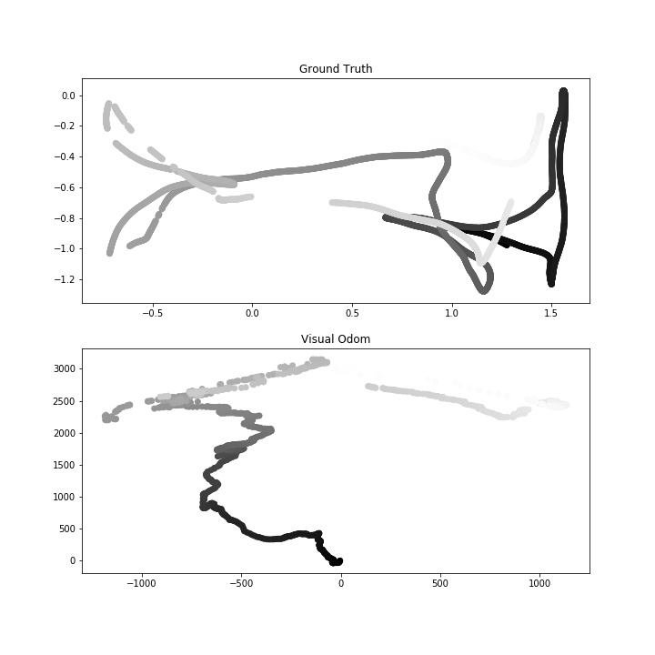

Visual Odometry
Team VOD: Akhilesh Aji, Bhavya Bahl, Ashwin JeyaseelanFall 2019 CS 6476 Computer Vision: Class Project
Georgia Tech
Abstract
We will develop a visual odometry system that tracks the pose of the camera throughout a video sequence. This involves elements of feature detection and matching, image rotation and translation, and consensus gathering to build a complex system.Visual Odometry in Practice:

Introduction
One of the most fundamental algorithms for mobile robotics is Simultaneous Localization And Mapping (SLAM). SLAM is used by a robot to discern where in the world it is, and build a map around itself. In this project we plan on replicating a crucial component of SLAM called Visual Odometry(VO). VO is the process of using a camera to verify the position of a robot. This can be very useful as the redundancy in odometry helps to reduce drift in the system as error slowly builds up.The system we will be developing will take in an RGB-D video feed generated by a kinect and will plot the movement of the camera around the world. Our system will tag each frame of the video with the (x,y,z, unit quaternion) of the camera when it took this image based on the predicted position of the previous image and transformation between the two images.
This problem is particularly interesting because it combines many of the tools we have discussed in class in a layered fashion. Edges must be extracted to help define features for SIFT to extract and match followed by finding the homography matrix to understand the relationship between each of the images. Each level of the process will require that the previous step was done with as little noise seeping through as possible. This means that there will always be additional features we can implement to reduce noise or allow the system to run faster. In addition visual odometry as a subject is still under research. As robots are becoming more ubiquitous and cheap they use fewer and cheaper sensors. As a result, simple cameras are doing the job that previously was accomplished with other sensors such as lidar. While our primary goal is to get visual odometry working with color and depth information we will compare its performance with that of a monocular system which is currently on the cutting edge of research.
This technology is demonstrated above in te driverless car domain. The image is showing feature mathing and a path being created out of the images that are colleted.
Approach
In visual odometry, we are given a camera which is moving through space and capturing images at discrete time steps. The goal is to predict the pose of the camera at each time step with respect to it's initial pose. Let us denote the set of images taken at times k by \(I_{0: n}=\left\{I_{0}, \ldots, I_{n}\right\}\). In the dataset we plan to use, the images contain a depth component along with the RGB components and the pixels in the frames of depth videos correspond 1:1 to the pixels in the frames of RGB videos.The movement of camera from one position to another can be modelled as a rigid body transformation given by \(T_{k, k-1} \in \mathbb{R}^{4 \times 4}\): \[T_{k, k-1}=\left[\begin{array}{cc}{R_{k, k-1}} & {t_{k, k-1}} \\ {0} & {1}\end{array}\right]\] where \(R_{k,k-1}\) is a \(3 \times 3\) rotation matrix and \(t_{k,k-1} \in \mathbb{R}^{3 \times 1}\) is the translation vector. An important component of visual odometry is to compute the relative transformation \(T_{k,k-1}\) from the images \(I_{k}\) and \(I_{k-1}\). To compute the camera pose at any time instant, we apply the transformations computed at each time step to initial pose. Let the set of camera poses be \(C_{0:n} = \left\{C_0, \ldots, C_n\right\}\), then \(C_n = C_{n-1}T_{n,n-1}\), with \(C_0\) being the initial camera pose, which can be set arbitrarily.
To compute transformations between images, we will first extract salient features from RGB images, which are likely to match across consecutive time instants. We will concatenate the depth information to the (x,y) location of each of the keypoints detected to get 3D features. The most relevant features for visual odometry are corners and blobs because their positions in can be measured accurately. There is vast literature on both corner detectors (like Moravec, Forstner, Harris, and FAST) and blob detectors(SIFT, SURF, CENSURE). We will explore some of these methods to perform feature detection. After detecting features, we will match features between images at consecutive time instants using the similarity of feature descriptors like SIFT. After computing the 3D-to-3D correspondences between the features of the images, we want to find \(T_k\) that minimizes the \(L_2\) distance between the two 3-D feature sets. The rotation and translation can be computed as: \[R_{k,k-1} = VU^{\top}, \quad t_{k,k-1}=\overline{X_{k}}-R_{k,k-1} \overline{X}_{k-1} \] where \(X_k\) and \(X_{k-1}\) are the set of corresponding 3-D points and \(\mathrm{USV}^{\top}=\operatorname{svd}\left(\left(X_{k-1}-\overline{X}_{k-1}\right)\left(X_{k}-\overline{X}_{k}\right)^{\top}\right)\) and \(\overline{\cdot}\) stands for arithmetic value. Once we have the transformation matrices, we can get the camera pose at each time instant simply by concatenating the transformations.
Experiments and results
Upon implementing our visual odometry algorithm, we will assess its performance on the thirteen unseen datasets by comparing the ground truth labels with the labels our system generates at each frame. Success in our task will be determined by a low error between our predicted poses and the ground truth poses.Due to the availability of optimized and highly reliable implementations we plan to use OpenCV for a majority of the tools required to put the system together. Primarily, for feature detection, (which we utilize when comparing pairs of frames to determine the translation between them), we plan on using OpenCV's implementation of the SIFT algorithm.
The datasets we will be using come from the computer vision group of the Technical University of Munich Department of Informatics[1]. They provide several videos with rgb-d data as well as ground truth camera pose information. While implementing and tuning our dataset, we will use sequence freiburg1_floor, which is a video going over the wooden floor of an office as well as reiburg2_large_no_loop. We will then test and analyze performance against the remaining datasets that have been made available.


To evaluate our approach, we will compare our frame position tags to the ground truth positions provided in the dataset using the root mean squared error over multiple trials. If there are any major outliers in the dataset, we will additionally use other more robust metrics such as the median error or average error without the square. A common issue that we might face with our experiments is drift. Since we’re incrementally computing the pose after each frame, any errors we make will affect the pose calculations in the next frame and so on. These errors can accumulate and cause our overall estimated path to significantly differ from the actual path. If this turns out to be an issue with our dataset, then we will look into methods to combat this such as ‘sliding window adjustment’, in which we group a window of previous frames and backpropagate a measure of error such as RMSE to correct and update previous pose calculations.
A success for our project would not only to have a fully working implementation of a visual odometry algorithm, but to find areas of improvement for our algorithm and to develop an understanding of the reasoning behind those improvements. Ultimately we aim to develop an algorithm that can predict the poses of the camera throughout a video sequence and to understand and build upon areas of potential improvement.
Progress
At this point we have implemented two different versions of the algorithm. The first is based on the epipolar geometry discussed in class. This method does not take advantage of the depth component of the dataset. While implementng this we were not able to get consistent results. We have decided not to continue pursuing this path as it does not take full advantage of the data we are given, and was the worse performing of the two routes we pursued. The second method which is the one we initially proposed in our approach is based on the work from Arun et al.[2] As you can see the results below are still not accurate, however several paths and continuity in the motion is preserved. The image below compares out recreated odometry with the ground truth. The color is the corresponding frame number 0 is black and the last timestep is in white. In both ground truth and our recreation the path start by going to the left then moving in the y dimension before jumping back to the right and finishing the path on that side. The more important issue is with the scaling of the path. While our solution ranges from -1,250 to 1,300 in the x dimension the ground truth ranges from -0.75 to 2. Due to the lack of success with this method we have decided to attempt a third implementation that based off of the work by Steinbrucker et al. [3]

References
[1]Sturm, Jürgen, Nikolas Engelhard, Felix Endres, Wolfram Burgard, and Daniel Cremers. "A benchmark for the evaluation of RGB-D SLAM systems." In 2012 IEEE/RSJ International Conference on Intelligent Robots and Systems, pp. 573-580. IEEE, 2012.[2] K. S. Arun, T. S. Huang, and S. D. Blostein, “Least-squares fitting oftwo 3-d point sets,”IEEE Trans. Pattern Anal. Machine Intell.,vol.9,no.5,pp. 698–700, 1987.
[3] Steinbrücker, Frank, Jürgen Sturm, and Daniel Cremers. "Real-time visual odometry from dense RGB-D images." In 2011 IEEE International Conference on Computer Vision Workshops (ICCV Workshops), pp. 719-722. IEEE, 2011.